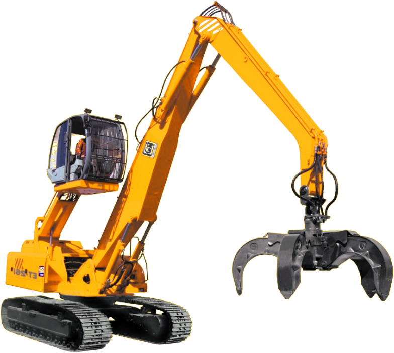

ЗАПЧАСТИ
И СЕРВИС
ПОГРУЗЧИКОВ
TEREX FUCHS,
SENNEBOGEN,
ATLAS

48
ЧАСОВ ДОСТАВКА
ЗАПЧАСТЕЙ С ЗАВОДА-
ИЗГОТОВИТЕЛЯ
В ГЕРМАНИИ
ЗАПЧАСТЕЙ С ЗАВОДА-
ИЗГОТОВИТЕЛЯ
В ГЕРМАНИИ
НЕЗАВИСИМЫЙ
СЕРВИС
100
КОМПАНИЙ
СТАЛИ
ПОСТОЯНЫМИ
КЛИЕНТАМИ
СТАЛИ
ПОСТОЯНЫМИ
КЛИЕНТАМИ
ЗНАНИЕ РЫНКА
ПОГРУЗЧИКОВ
ИЗНУТРИ
ЗАЛОГ ОБРАЗЦОВОГО
СЕРВИСА
ЗА 10 ЛЕТ НАС ВЫБРАЛИ
ДЛЯ ОБСЛУЖИВАНИЯ
БОЛЕЕ 100 КЛИЕНТОВ

ТОЛЬКО ОРИГИНАЛ
Дилерские сертификаты Deutz и Cummins. Работа напрямую с заводами-изготовителями
ВРЕМЯ— ДЕНЬГИ
Сервис без простоев Возвращаем погрузчики к жизни в рабочем режиме 24\7
НУЖНО СРОЧНО?
«Срочные» запчасти доставляем прямо с завода из Германии за 48 часов
7
МОБИЛЬНЫХ ГРУПП
В ПОСТОЯННОЙ
ГОТОВНОСТИ
В ПОСТОЯННОЙ
ГОТОВНОСТИ
ВЫЕЗДНАЯ
КОМАНДА
ВЫЕЗД НА МЕСТО
ОТ МОСКВЫ ДО СОЧИ
538
ПОЧИНОК
ПОГРУЗЧИКОВ
ПОГРУЗЧИКОВ
ВЫПОЛНЕННЫЕ
РАБОТЫ
ЗА 12 ЛЕТ РАБОТЫ
МЫ ЗАСЛУЖИЛИ ДОВЕРИЕ
И БЛАГОДАРНОСТЬ
КЛИЕНТОВ, КОТОРЫМИ
ГОРДИМСЯ
538
ПОЧИНОК
ПОГРУЗЧИКОВ
ПОГРУЗЧИКОВ
ВСЕ НАШИ
СОТРУДНИКИ
ПРОШЛИ
ОБУЧЕНИЕ
И ИМЕЮТ СЕРИТФИКАТЫ
TEREX FUCHS И DEUTZ
{kind=link}
{kind=link}
{kind=link}
{kind=link}
{kind=link}
12
МЕСЯЦЕВ
НА ДЕТАЛИ
НА ДЕТАЛИ
6
МЕСЯЦЕВ
НА РАБОТУ
НА РАБОТУ
ГАРАНТИЯ!
В ЛЮБОЕ ВРЕМЯ СУТОК
ВЫ СМОЖЕТЕ ВОСПОЛЬЗОВАТЬСЯ
ГАРАНТИЕЙ И РЕШИТЬ
ВОЗНИКШИЕ ПРОБЛЕМЫ